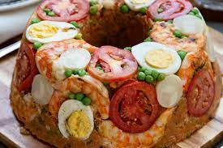

|  |
Cuzcuz PaulistaNunca confie nos paulistasUm cuzcuz que foi misturado com tudo o que tinha na geladeira de um Paulista médio, não se sabe em qual laboratório algo assim pode ter sido desenvolvido, mais pode ser confundido facilmente com uma ameaça de guerra. |
Novidades:
 |
Whey proteinA fórmula mágica para te deixar mais sexyLixo da indústria do queijo que ratos de academia adoram, ajuda na suplementação para o fortalecimento dos seus músculos, o deixando mais forte , ou você pode utilizar a agulha ao lado para adiantar o processo. |
 |
Pastel de capivaraÉ muito fofo para se comerUm pastel com um formato de um roedor fofo , capivaras são muito legais , e isso concerteza vai te fazer ter pena de comer o pastel, contra intuitivo comer algo tão fofo |
 |
Quiche de camarãoUma empada sem tampa ou uma mini torta ?Uma poderosa comida para alunos que não sabem programar em HTML, faz certos professores te darem uma nota extra por deixa ele com fome |
 |
CAFÉÁgua sagrada dos programadoresUm elixir divino para progradores , uma vez usado concede a eles a capacidade de ser um programador de verdade , além de uma bela energia extra para todos os seus deveres, Algumas pessoas usam uma substância nefasta e sombria conhecida como "Energético" mais todos sabem que só os programadores Nutella usam essas coisas vergonhosas. |
 |
EnergéticoSuquinho de programadorUma substância sintética psicoestimulante feita com gostinho de frutinha, ótima para E-Grils é E-Bois, tem função de substituir o café afinal a última pessoa que tomou os dois foi de base, ela é uma bebida da nova geração. |